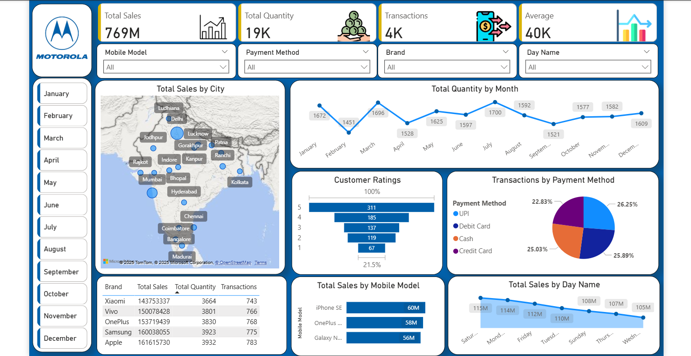
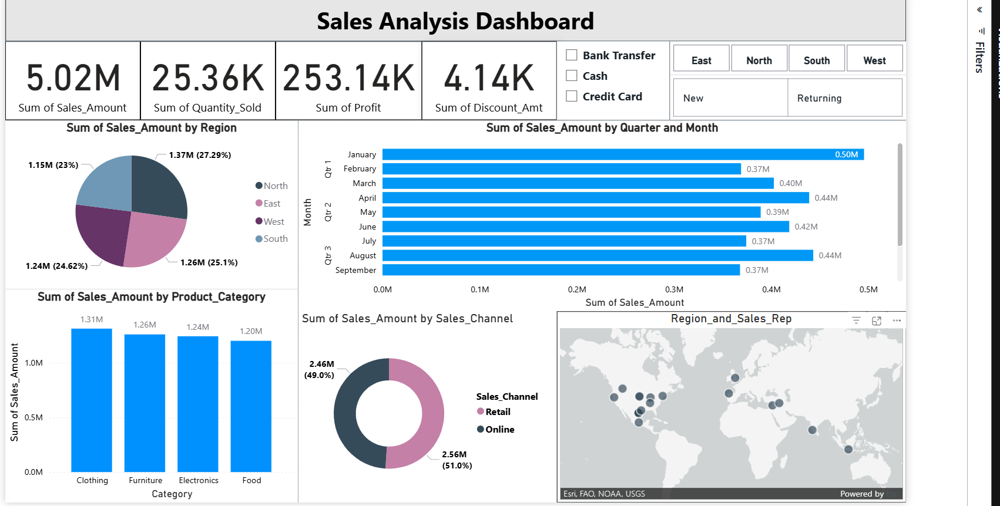
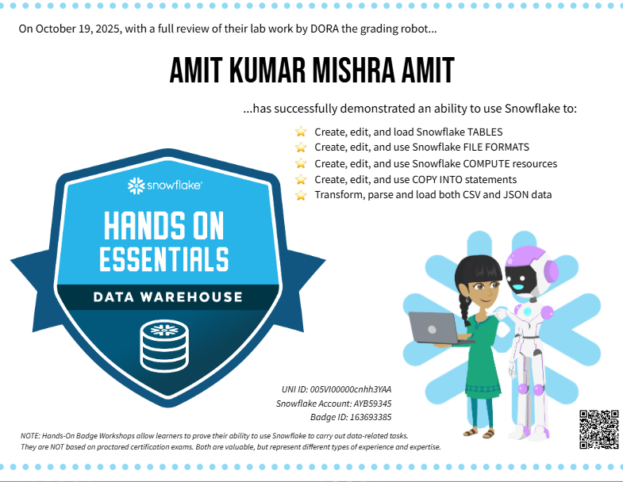
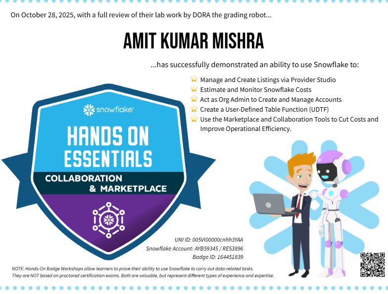
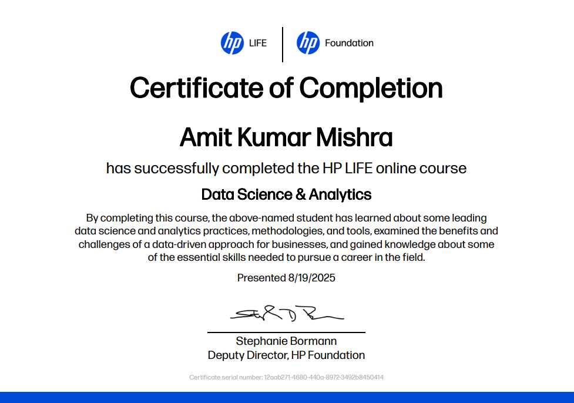
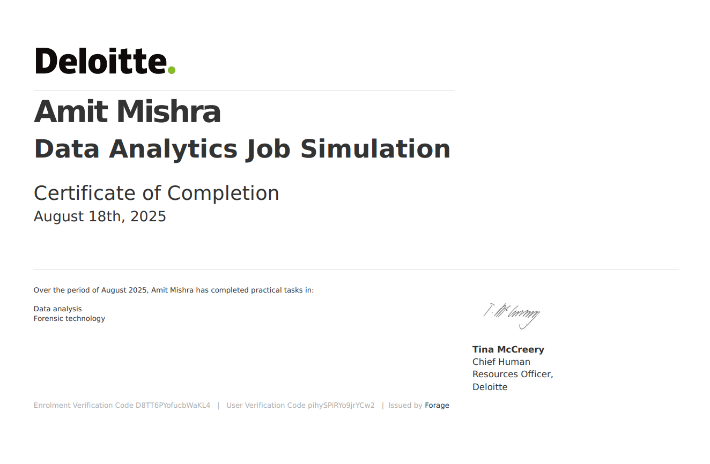
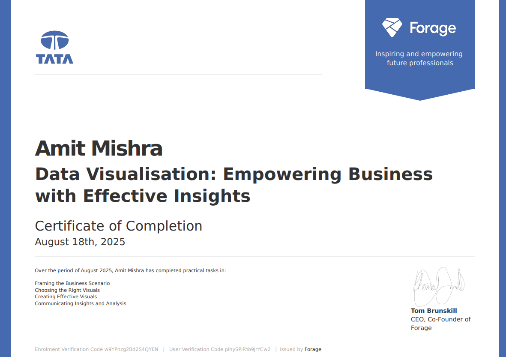
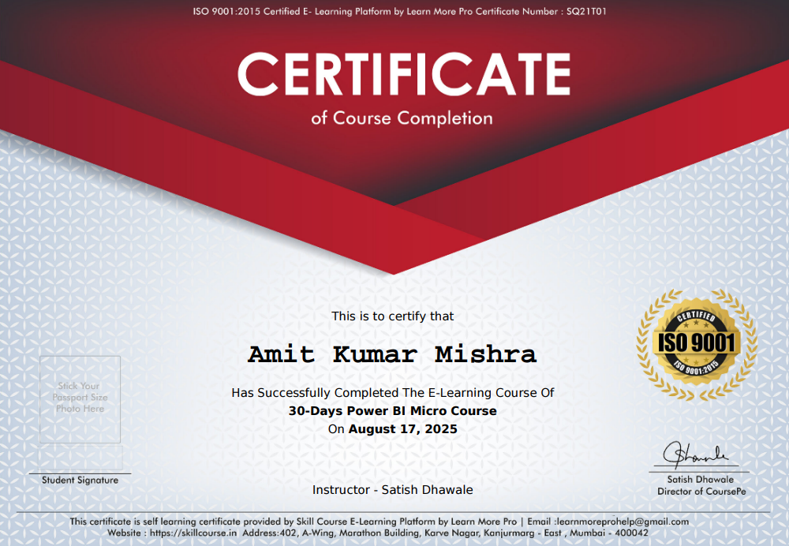

Programming & Querying
Core
Final-year BCA student turning data into insights
Hi, I'm Amit, a data analytics enthusiast who loves SQL, dashboards & real-world business problems.
I'm a final-year BCA student with a strong interest in data analytics, skilled in SQL, Python, Excel, Power BI, Snowflake, and Microsoft Fabric. I enjoy cleaning messy data, building dashboards, and extracting insights that actually help teams make better decisions.
SQL • Python • Excel
Power BI • Tableau • Fabric
Snowflake • MySQL • PostgreSQL
Projects
3+analytics builds
Tools
10+in stack
Experience
1industry role
About
Who I am as a data analyst
From BCA classrooms to real-world analytics projects.
I'm Amit, a final-year Bachelor of Computer Applications student at Harish Chandra P.G. College, Varanasi (2023–2026). I discovered data analytics through programming and database courses, and since then I've been actively practising SQL, Python, and BI tools on real datasets.
I’ve built analytics projects using Power BI, SQL, and APIs — from sales performance dashboards to weather forecasting and CRM opportunity analysis. I enjoy connecting business questions with data logic, then turning that into clean visuals and practical recommendations.
Recently, I worked as a Sales Executive at Thomas Cook India Limited, where I used Excel and Power BI to analyse sales data and help shape strategies that contributed to a significant increase in sales.
Currently:
• Final-year BCA student focused on data analytics
• Building portfolio projects in SQL, Power BI, and Python
• Learning modern platforms like Snowflake and Microsoft Fabric to work with cloud data and lakehouse architectures.
• Final-year BCA student focused on data analytics
• Building portfolio projects in SQL, Power BI, and Python
• Learning modern platforms like Snowflake and Microsoft Fabric to work with cloud data and lakehouse architectures.
Bachelor of Computer Applications
Harish Chandra P.G. College, Varanasi
Sales Executive
Thomas Cook India Limited
Aspiring Data Analyst
Self-driven projects & virtual programs
Skills
My analytics toolkit
Tools and concepts I use to go from raw data to insights.
Data Visualisation
Core
Databases
Core
Cloud & Modern Data
Growing
Analytics Workflow
Core
Tools & Productivity
Core
Projects
Dashboard & end-to-end projects
Real datasets, practical questions, and decision-focused dashboards.
Annual Mobile Sales Report
End-to-End • BIBuilt an interactive Power BI dashboard to track mobile sales performance across brands, models, and cities. Analysed sales volume, transactions, customer ratings, and payment methods to highlight what drives revenue.

Weather Forecasting Dashboard
End-to-End • APICreated a Power BI report powered by a live Weather API, showing a 7-day forecast with temperature trends, humidity, AQI, wind speed and rain probability. The data refreshes automatically through API integration to keep the dashboard up to date.

Sales Analysis Dashboard
BI • SalesDeveloped a Power BI dashboard to analyse overall sales performance: revenue by category and region, discount vs revenue, profit analysis, and key KPIs. The dashboard helps stakeholders quickly identify high-performing segments and areas needing attention.

SQL & Querying
Database & SQL-focused work
Clean schemas, analytical queries, and business-focused SQL analysis.
CRM Sales Opportunities Insights (SQL)
SQL & AnalyticsDesigned a relational database structure for CRM sales data and wrote SQL queries to analyse performance by agent, product, and region. Explored win/loss patterns, sales trends, and basic revenue forecasting to surface opportunities for improvement.
Zepto Sales Insights using SQL
SQL & AnalyticsAnalysed Zepto sales data using SQL to understand customer orders, product performance, and city-wise demand. Designed queries to track total revenue, average order value, repeat customers, and top-performing product categories to support data-driven decision-making for business growth.
SQL Data Analysis Project
SQL & Business InsightsPerformed data cleaning, aggregation, and business-driven analytics using SQL. Extracted KPIs such as total revenue, customer retention, product popularity, and time-based trends. Delivered actionable insights for stakeholders based on raw transactional data.
Certificates
Certifications & virtual programs
Structured learning that supports my self-driven practice.
Snowflake
Snowflake Hands-On Essentials
Snowflake • Badge 1

Snowflake
Collaboration, Marketplace & Cost Estimation
Snowflake • Badge 2

Analytics
HP LIFE – Data Science & Analytics
HP Foundation • Aug 2025

Industry
Deloitte Data Analytics Job Simulation
Virtual Experience • Aug 2025

Visualization
Tata Data Visualization Program
Forage • Aug 2025

SQL
SQL for Data Analysis
Simplilearn & HackerRank
Foundations
Career Essentials in Data Analysis
Microsoft & LinkedIn
Power BI
Power BI Certification
Simplilearn & Microsoft

Automation
Excel Automation using ChatGPT
Simplilearn & Microsoft
Resume
Download my resume
Full details of my education, experience, and projects.
Contact
Let’s talk about data
Open to internships, full-time roles, and collaboration ideas.
Location
Ballia, Uttar Pradesh, India (IST)
LinkedIn
GitHub